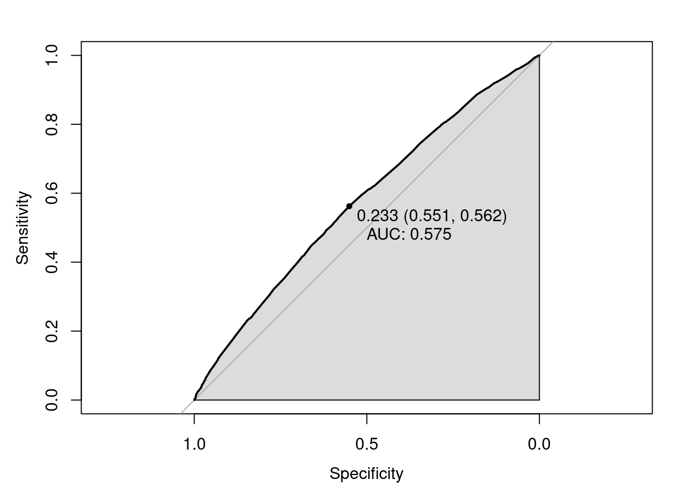

In the NYPD shooting incident database, a variable is called STATISTICAL_MURDER_FLAG which indicates if this shooting incident is classified as a murder. It has a binary outcome “TRUE” or “FALSE”. We will use logistic regression model to identify if a shooting can be classified as a murder.
At first, import data from the NYPD shooting incident database
historic_NYPD_df = read_csv("./data/NYPD_Shooting_Incident_Data__Historic_.csv")
year_to_date_df = read_csv("./data/NYPD_Shooting_Incident_Data__Year_To_Date_.csv")
df = bind_rows(historic_NYPD_df,year_to_date_df)
df = df %>%
separate(OCCUR_TIME,into = c("hour","minute","second"),sep = ":")%>%
separate(OCCUR_DATE,into = c("month","date","year"),sep = "/")%>%
mutate(hour=as.numeric(hour),
time_period = case_when(
hour>=0 & hour<6 ~ "MIDNIGHT",
hour>=6 & hour<12 ~ "MORNING",
hour>=12 & hour<18 ~ "AFTERNOON",
hour>=18 & hour<=23 ~ "EVENING"),
month = as.factor(month))%>%
select(BORO,STATISTICAL_MURDER_FLAG,PERP_AGE_GROUP,PERP_SEX,PERP_RACE,VIC_AGE_GROUP,VIC_SEX,VIC_RACE,time_period,month)%>%
mutate(STATISTICAL_MURDER_FLAG = ifelse(STATISTICAL_MURDER_FLAG=="TRUE", 1, 0),
BORO = as.factor(BORO),
PERP_AGE_GROUP = as.factor(PERP_AGE_GROUP),
PERP_SEX = as.factor(PERP_SEX),
PERP_RACE = as.factor(PERP_RACE),
VIC_AGE_GROUP = as.factor(VIC_AGE_GROUP),
VIC_SEX = as.factor(VIC_SEX),
VIC_RACE = as.factor(VIC_RACE))%>%
na.omit()there are some irregular value and we need to deal with them.
df=df[df$PERP_AGE_GROUP != "UNKNOWN", ]
df=df[df$PERP_AGE_GROUP != "1020", ]
df=df[df$PERP_AGE_GROUP != "940", ]
df=df[df$PERP_AGE_GROUP != "224", ]
df=df[df$PERP_SEX != "U", ]
df=df[df$PERP_RACE != "UNKNOWN", ]
df=df[df$VIC_SEX != "U", ]
df=df[df$VIC_AGE_GROUP != "UNKNOWN", ]First, build the initial logistic regression model with all variables
fit = glm(STATISTICAL_MURDER_FLAG ~ BORO+PERP_AGE_GROUP+PERP_SEX+PERP_RACE+VIC_AGE_GROUP+VIC_SEX+VIC_RACE+time_period+month,data=df,family = binomial())
summary(fit)##
## Call:
## glm(formula = STATISTICAL_MURDER_FLAG ~ BORO + PERP_AGE_GROUP +
## PERP_SEX + PERP_RACE + VIC_AGE_GROUP + VIC_SEX + VIC_RACE +
## time_period + month, family = binomial(), data = df)
##
## Deviance Residuals:
## Min 1Q Median 3Q Max
## -1.5206 -0.7615 -0.6757 -0.5437 2.0936
##
## Coefficients:
## Estimate Std. Error z value Pr(>|z|)
## (Intercept) -24.53114 294.98715 -0.083 0.93372
## BOROBROOKLYN -0.14968 0.05431 -2.756 0.00585 **
## BOROMANHATTAN -0.15997 0.06977 -2.293 0.02187 *
## BOROQUEENS -0.12844 0.06798 -1.890 0.05882 .
## BOROSTATEN ISLAND -0.22599 0.11305 -1.999 0.04560 *
## PERP_AGE_GROUP18-24 0.09834 0.07788 1.263 0.20668
## PERP_AGE_GROUP25-44 0.37407 0.07962 4.698 2.63e-06 ***
## PERP_AGE_GROUP45-64 0.67019 0.12182 5.501 3.77e-08 ***
## PERP_AGE_GROUP65+ 0.85839 0.29406 2.919 0.00351 **
## PERP_SEXM -0.17752 0.12486 -1.422 0.15507
## PERP_RACEASIAN / PACIFIC ISLANDER 12.12249 229.62597 0.053 0.95790
## PERP_RACEBLACK 11.76403 229.62588 0.051 0.95914
## PERP_RACEBLACK HISPANIC 11.60375 229.62589 0.051 0.95970
## PERP_RACEWHITE 12.35674 229.62593 0.054 0.95708
## PERP_RACEWHITE HISPANIC 11.84585 229.62589 0.052 0.95886
## VIC_AGE_GROUP18-24 0.21315 0.08094 2.634 0.00845 **
## VIC_AGE_GROUP25-44 0.32565 0.08050 4.045 5.23e-05 ***
## VIC_AGE_GROUP45-64 0.32568 0.10666 3.053 0.00226 **
## VIC_AGE_GROUP65+ 0.53173 0.22826 2.329 0.01983 *
## VIC_SEXM -0.09107 0.06689 -1.361 0.17337
## VIC_RACEASIAN / PACIFIC ISLANDER 11.61377 185.17392 0.063 0.94999
## VIC_RACEBLACK 11.34832 185.17385 0.061 0.95113
## VIC_RACEBLACK HISPANIC 11.14533 185.17386 0.060 0.95201
## VIC_RACEUNKNOWN 10.98051 185.17433 0.059 0.95271
## VIC_RACEWHITE 11.41763 185.17389 0.062 0.95083
## VIC_RACEWHITE HISPANIC 11.47296 185.17386 0.062 0.95060
## time_periodEVENING 0.11915 0.05919 2.013 0.04411 *
## time_periodMIDNIGHT 0.14721 0.06183 2.381 0.01726 *
## time_periodMORNING 0.27665 0.08934 3.097 0.00196 **
## month02 -0.07987 0.12270 -0.651 0.51512
## month03 -0.10884 0.11545 -0.943 0.34582
## month04 0.07014 0.10866 0.645 0.51861
## month05 0.04562 0.10351 0.441 0.65938
## month06 -0.14814 0.10462 -1.416 0.15677
## month07 -0.07027 0.10264 -0.685 0.49360
## month08 -0.11833 0.10302 -1.149 0.25071
## month09 0.07111 0.10602 0.671 0.50239
## month10 -0.05511 0.11087 -0.497 0.61910
## month11 -0.02810 0.11497 -0.244 0.80692
## month12 0.15643 0.11312 1.383 0.16672
## ---
## Signif. codes: 0 '***' 0.001 '**' 0.01 '*' 0.05 '.' 0.1 ' ' 1
##
## (Dispersion parameter for binomial family taken to be 1)
##
## Null deviance: 13593 on 12422 degrees of freedom
## Residual deviance: 13345 on 12383 degrees of freedom
## AIC: 13425
##
## Number of Fisher Scoring iterations: 11we can see from the above result that some variables do not pass the significance test. Now, we can use the stepwise method to choose variables.
step(fit)## Start: AIC=13425.06
## STATISTICAL_MURDER_FLAG ~ BORO + PERP_AGE_GROUP + PERP_SEX +
## PERP_RACE + VIC_AGE_GROUP + VIC_SEX + VIC_RACE + time_period +
## month
##
## Df Deviance AIC
## - month 11 13362 13420
## - VIC_SEX 1 13347 13425
## - PERP_SEX 1 13347 13425
## <none> 13345 13425
## - BORO 4 13356 13428
## - time_period 3 13356 13430
## - VIC_RACE 6 13365 13433
## - VIC_AGE_GROUP 4 13365 13437
## - PERP_RACE 5 13370 13440
## - PERP_AGE_GROUP 4 13408 13480
##
## Step: AIC=13420.04
## STATISTICAL_MURDER_FLAG ~ BORO + PERP_AGE_GROUP + PERP_SEX +
## PERP_RACE + VIC_AGE_GROUP + VIC_SEX + VIC_RACE + time_period
##
## Df Deviance AIC
## - VIC_SEX 1 13364 13420
## - PERP_SEX 1 13364 13420
## <none> 13362 13420
## - BORO 4 13373 13423
## - time_period 3 13372 13424
## - VIC_RACE 6 13382 13428
## - VIC_AGE_GROUP 4 13383 13433
## - PERP_RACE 5 13387 13435
## - PERP_AGE_GROUP 4 13424 13474
##
## Step: AIC=13419.75
## STATISTICAL_MURDER_FLAG ~ BORO + PERP_AGE_GROUP + PERP_SEX +
## PERP_RACE + VIC_AGE_GROUP + VIC_RACE + time_period
##
## Df Deviance AIC
## - PERP_SEX 1 13366 13420
## <none> 13364 13420
## - BORO 4 13374 13422
## - time_period 3 13374 13424
## - VIC_RACE 6 13384 13428
## - VIC_AGE_GROUP 4 13384 13432
## - PERP_RACE 5 13389 13435
## - PERP_AGE_GROUP 4 13427 13475
##
## Step: AIC=13419.64
## STATISTICAL_MURDER_FLAG ~ BORO + PERP_AGE_GROUP + PERP_RACE +
## VIC_AGE_GROUP + VIC_RACE + time_period
##
## Df Deviance AIC
## <none> 13366 13420
## - BORO 4 13376 13422
## - time_period 3 13376 13424
## - VIC_RACE 6 13386 13428
## - VIC_AGE_GROUP 4 13387 13433
## - PERP_RACE 5 13391 13435
## - PERP_AGE_GROUP 4 13429 13475##
## Call: glm(formula = STATISTICAL_MURDER_FLAG ~ BORO + PERP_AGE_GROUP +
## PERP_RACE + VIC_AGE_GROUP + VIC_RACE + time_period, family = binomial(),
## data = df)
##
## Coefficients:
## (Intercept) BOROBROOKLYN
## -24.5963 -0.1516
## BOROMANHATTAN BOROQUEENS
## -0.1575 -0.1258
## BOROSTATEN ISLAND PERP_AGE_GROUP18-24
## -0.2108 0.0914
## PERP_AGE_GROUP25-44 PERP_AGE_GROUP45-64
## 0.3705 0.6618
## PERP_AGE_GROUP65+ PERP_RACEASIAN / PACIFIC ISLANDER
## 0.8322 11.9581
## PERP_RACEBLACK PERP_RACEBLACK HISPANIC
## 11.5806 11.4243
## PERP_RACEWHITE PERP_RACEWHITE HISPANIC
## 12.1770 11.6648
## VIC_AGE_GROUP18-24 VIC_AGE_GROUP25-44
## 0.2117 0.3249
## VIC_AGE_GROUP45-64 VIC_AGE_GROUP65+
## 0.3387 0.5701
## VIC_RACEASIAN / PACIFIC ISLANDER VIC_RACEBLACK
## 11.6048 11.3289
## VIC_RACEBLACK HISPANIC VIC_RACEUNKNOWN
## 11.1229 10.9427
## VIC_RACEWHITE VIC_RACEWHITE HISPANIC
## 11.4126 11.4548
## time_periodEVENING time_periodMIDNIGHT
## 0.1103 0.1295
## time_periodMORNING
## 0.2818
##
## Degrees of Freedom: 12422 Total (i.e. Null); 12396 Residual
## Null Deviance: 13590
## Residual Deviance: 13370 AIC: 13420Now, we test the reduced model from the above result
fit_2 = glm(formula = STATISTICAL_MURDER_FLAG ~ BORO + PERP_AGE_GROUP +
PERP_RACE + VIC_AGE_GROUP + VIC_RACE + time_period, family = binomial(),
data = df)
summary(fit_2)##
## Call:
## glm(formula = STATISTICAL_MURDER_FLAG ~ BORO + PERP_AGE_GROUP +
## PERP_RACE + VIC_AGE_GROUP + VIC_RACE + time_period, family = binomial(),
## data = df)
##
## Deviance Residuals:
## Min 1Q Median 3Q Max
## -1.4753 -0.7608 -0.6741 -0.5528 2.0646
##
## Coefficients:
## Estimate Std. Error z value Pr(>|z|)
## (Intercept) -24.59626 294.62999 -0.083 0.93347
## BOROBROOKLYN -0.15162 0.05418 -2.799 0.00513 **
## BOROMANHATTAN -0.15754 0.06963 -2.263 0.02366 *
## BOROQUEENS -0.12585 0.06781 -1.856 0.06345 .
## BOROSTATEN ISLAND -0.21083 0.11273 -1.870 0.06145 .
## PERP_AGE_GROUP18-24 0.09140 0.07777 1.175 0.23990
## PERP_AGE_GROUP25-44 0.37055 0.07952 4.660 3.17e-06 ***
## PERP_AGE_GROUP45-64 0.66181 0.12152 5.446 5.15e-08 ***
## PERP_AGE_GROUP65+ 0.83216 0.29153 2.854 0.00431 **
## PERP_RACEASIAN / PACIFIC ISLANDER 11.95815 228.86346 0.052 0.95833
## PERP_RACEBLACK 11.58060 228.86337 0.051 0.95964
## PERP_RACEBLACK HISPANIC 11.42430 228.86338 0.050 0.96019
## PERP_RACEWHITE 12.17704 228.86342 0.053 0.95757
## PERP_RACEWHITE HISPANIC 11.66480 228.86337 0.051 0.95935
## VIC_AGE_GROUP18-24 0.21169 0.08055 2.628 0.00859 **
## VIC_AGE_GROUP25-44 0.32493 0.08016 4.054 5.04e-05 ***
## VIC_AGE_GROUP45-64 0.33869 0.10647 3.181 0.00147 **
## VIC_AGE_GROUP65+ 0.57005 0.22743 2.507 0.01219 *
## VIC_RACEASIAN / PACIFIC ISLANDER 11.60479 185.54895 0.063 0.95013
## VIC_RACEBLACK 11.32889 185.54888 0.061 0.95131
## VIC_RACEBLACK HISPANIC 11.12294 185.54889 0.060 0.95220
## VIC_RACEUNKNOWN 10.94271 185.54936 0.059 0.95297
## VIC_RACEWHITE 11.41265 185.54892 0.062 0.95096
## VIC_RACEWHITE HISPANIC 11.45482 185.54889 0.062 0.95077
## time_periodEVENING 0.11031 0.05901 1.869 0.06156 .
## time_periodMIDNIGHT 0.12948 0.06141 2.108 0.03501 *
## time_periodMORNING 0.28184 0.08915 3.161 0.00157 **
## ---
## Signif. codes: 0 '***' 0.001 '**' 0.01 '*' 0.05 '.' 0.1 ' ' 1
##
## (Dispersion parameter for binomial family taken to be 1)
##
## Null deviance: 13593 on 12422 degrees of freedom
## Residual deviance: 13366 on 12396 degrees of freedom
## AIC: 13420
##
## Number of Fisher Scoring iterations: 11We can see that PERP_RACE and VIC_RACE still don’t pass the significance test, now we drop these two and run again
fit_3 = glm(formula = STATISTICAL_MURDER_FLAG ~ BORO + PERP_AGE_GROUP +
VIC_AGE_GROUP + time_period, family = binomial(),
data = df)
summary(fit_3)##
## Call:
## glm(formula = STATISTICAL_MURDER_FLAG ~ BORO + PERP_AGE_GROUP +
## VIC_AGE_GROUP + time_period, family = binomial(), data = df)
##
## Deviance Residuals:
## Min 1Q Median 3Q Max
## -1.2752 -0.7583 -0.6824 -0.5674 1.9931
##
## Coefficients:
## Estimate Std. Error z value Pr(>|z|)
## (Intercept) -1.69171 0.10140 -16.683 < 2e-16 ***
## BOROBROOKLYN -0.14598 0.05199 -2.808 0.004990 **
## BOROMANHATTAN -0.15839 0.06935 -2.284 0.022369 *
## BOROQUEENS -0.08578 0.06639 -1.292 0.196360
## BOROSTATEN ISLAND -0.14688 0.11058 -1.328 0.184080
## PERP_AGE_GROUP18-24 0.09275 0.07765 1.194 0.232306
## PERP_AGE_GROUP25-44 0.38709 0.07932 4.880 1.06e-06 ***
## PERP_AGE_GROUP45-64 0.73046 0.12020 6.077 1.23e-09 ***
## PERP_AGE_GROUP65+ 0.99871 0.28496 3.505 0.000457 ***
## VIC_AGE_GROUP18-24 0.21832 0.08043 2.714 0.006640 **
## VIC_AGE_GROUP25-44 0.33706 0.07999 4.214 2.51e-05 ***
## VIC_AGE_GROUP45-64 0.37219 0.10571 3.521 0.000430 ***
## VIC_AGE_GROUP65+ 0.63876 0.22417 2.849 0.004380 **
## time_periodEVENING 0.11094 0.05880 1.887 0.059185 .
## time_periodMIDNIGHT 0.12776 0.06117 2.088 0.036759 *
## time_periodMORNING 0.28131 0.08879 3.168 0.001534 **
## ---
## Signif. codes: 0 '***' 0.001 '**' 0.01 '*' 0.05 '.' 0.1 ' ' 1
##
## (Dispersion parameter for binomial family taken to be 1)
##
## Null deviance: 13593 on 12422 degrees of freedom
## Residual deviance: 13424 on 12407 degrees of freedom
## AIC: 13456
##
## Number of Fisher Scoring iterations: 4From the above result, we use dummy variables for BOROQUEENS,BOROSTATEN ISLAND,PERP_AGE_GROUP18-24
df$QUEENS = ifelse(df$BORO=="QUEENS",1,0)
df$STATEN = ifelse(df$BORO=="STATEN ISLAND",1,0)
df$BROOKLYN = ifelse(df$BORO=="BROOKLYN",1,0)
df$MANHATTAN = ifelse(df$BORO=="MANHATTAN",1,0)
df$PERP_18 =ifelse(df$PERP_AGE_GROUP=="18-24",1,0)
df$PERP_25 =ifelse(df$PERP_AGE_GROUP=="25-44",1,0)
df$PERP_45 =ifelse(df$PERP_AGE_GROUP=="45-64",1,0)
df$PERP_65 =ifelse(df$PERP_AGE_GROUP=="65+",1,0)Run logistic regression with these dummy variables again and use stepwise method to filter.
fit_4 = glm(formula = STATISTICAL_MURDER_FLAG ~ QUEENS + STATEN + BROOKLYN + MANHATTAN + PERP_18 + PERP_25 + PERP_45 + PERP_65 +
VIC_AGE_GROUP + time_period, family = binomial(),
data = df)
summary(fit_4)##
## Call:
## glm(formula = STATISTICAL_MURDER_FLAG ~ QUEENS + STATEN + BROOKLYN +
## MANHATTAN + PERP_18 + PERP_25 + PERP_45 + PERP_65 + VIC_AGE_GROUP +
## time_period, family = binomial(), data = df)
##
## Deviance Residuals:
## Min 1Q Median 3Q Max
## -1.2752 -0.7583 -0.6824 -0.5674 1.9931
##
## Coefficients:
## Estimate Std. Error z value Pr(>|z|)
## (Intercept) -1.69171 0.10140 -16.683 < 2e-16 ***
## QUEENS -0.08578 0.06639 -1.292 0.196360
## STATEN -0.14688 0.11058 -1.328 0.184080
## BROOKLYN -0.14598 0.05199 -2.808 0.004990 **
## MANHATTAN -0.15839 0.06935 -2.284 0.022369 *
## PERP_18 0.09275 0.07765 1.194 0.232306
## PERP_25 0.38709 0.07932 4.880 1.06e-06 ***
## PERP_45 0.73046 0.12020 6.077 1.23e-09 ***
## PERP_65 0.99871 0.28496 3.505 0.000457 ***
## VIC_AGE_GROUP18-24 0.21832 0.08043 2.714 0.006640 **
## VIC_AGE_GROUP25-44 0.33706 0.07999 4.214 2.51e-05 ***
## VIC_AGE_GROUP45-64 0.37219 0.10571 3.521 0.000430 ***
## VIC_AGE_GROUP65+ 0.63876 0.22417 2.849 0.004380 **
## time_periodEVENING 0.11094 0.05880 1.887 0.059185 .
## time_periodMIDNIGHT 0.12776 0.06117 2.088 0.036759 *
## time_periodMORNING 0.28131 0.08879 3.168 0.001534 **
## ---
## Signif. codes: 0 '***' 0.001 '**' 0.01 '*' 0.05 '.' 0.1 ' ' 1
##
## (Dispersion parameter for binomial family taken to be 1)
##
## Null deviance: 13593 on 12422 degrees of freedom
## Residual deviance: 13424 on 12407 degrees of freedom
## AIC: 13456
##
## Number of Fisher Scoring iterations: 4step(fit_4)## Start: AIC=13455.9
## STATISTICAL_MURDER_FLAG ~ QUEENS + STATEN + BROOKLYN + MANHATTAN +
## PERP_18 + PERP_25 + PERP_45 + PERP_65 + VIC_AGE_GROUP + time_period
##
## Df Deviance AIC
## - PERP_18 1 13425 13455
## - QUEENS 1 13426 13456
## - STATEN 1 13426 13456
## <none> 13424 13456
## - MANHATTAN 1 13429 13459
## - time_period 3 13435 13461
## - BROOKLYN 1 13432 13462
## - PERP_65 1 13435 13465
## - VIC_AGE_GROUP 4 13448 13472
## - PERP_25 1 13449 13479
## - PERP_45 1 13460 13490
##
## Step: AIC=13455.34
## STATISTICAL_MURDER_FLAG ~ QUEENS + STATEN + BROOKLYN + MANHATTAN +
## PERP_25 + PERP_45 + PERP_65 + VIC_AGE_GROUP + time_period
##
## Df Deviance AIC
## - QUEENS 1 13427 13455
## - STATEN 1 13427 13455
## <none> 13425 13455
## - MANHATTAN 1 13431 13459
## - time_period 3 13436 13460
## - BROOKLYN 1 13433 13461
## - PERP_65 1 13436 13464
## - VIC_AGE_GROUP 4 13452 13474
## - PERP_45 1 13465 13493
## - PERP_25 1 13471 13499
##
## Step: AIC=13454.95
## STATISTICAL_MURDER_FLAG ~ STATEN + BROOKLYN + MANHATTAN + PERP_25 +
## PERP_45 + PERP_65 + VIC_AGE_GROUP + time_period
##
## Df Deviance AIC
## - STATEN 1 13428 13454
## <none> 13427 13455
## - MANHATTAN 1 13431 13457
## - BROOKLYN 1 13433 13459
## - time_period 3 13438 13460
## - PERP_65 1 13437 13463
## - VIC_AGE_GROUP 4 13453 13473
## - PERP_45 1 13466 13492
## - PERP_25 1 13472 13498
##
## Step: AIC=13454.15
## STATISTICAL_MURDER_FLAG ~ BROOKLYN + MANHATTAN + PERP_25 + PERP_45 +
## PERP_65 + VIC_AGE_GROUP + time_period
##
## Df Deviance AIC
## <none> 13428 13454
## - MANHATTAN 1 13432 13456
## - BROOKLYN 1 13434 13458
## - time_period 3 13439 13459
## - PERP_65 1 13438 13462
## - VIC_AGE_GROUP 4 13454 13472
## - PERP_45 1 13467 13491
## - PERP_25 1 13473 13497##
## Call: glm(formula = STATISTICAL_MURDER_FLAG ~ BROOKLYN + MANHATTAN +
## PERP_25 + PERP_45 + PERP_65 + VIC_AGE_GROUP + time_period,
## family = binomial(), data = df)
##
## Coefficients:
## (Intercept) BROOKLYN MANHATTAN
## -1.6644 -0.1089 -0.1221
## PERP_25 PERP_45 PERP_65
## 0.3088 0.6528 0.9053
## VIC_AGE_GROUP18-24 VIC_AGE_GROUP25-44 VIC_AGE_GROUP45-64
## 0.2287 0.3490 0.3814
## VIC_AGE_GROUP65+ time_periodEVENING time_periodMIDNIGHT
## 0.6483 0.1145 0.1293
## time_periodMORNING
## 0.2822
##
## Degrees of Freedom: 12422 Total (i.e. Null); 12410 Residual
## Null Deviance: 13590
## Residual Deviance: 13430 AIC: 13450now,we can run the model for the last time
fit_5 = glm(formula = STATISTICAL_MURDER_FLAG ~ BROOKLYN + MANHATTAN +
PERP_25 + PERP_45 + PERP_65 + VIC_AGE_GROUP + time_period,
family = binomial(), data = df)
summary(fit_5)##
## Call:
## glm(formula = STATISTICAL_MURDER_FLAG ~ BROOKLYN + MANHATTAN +
## PERP_25 + PERP_45 + PERP_65 + VIC_AGE_GROUP + time_period,
## family = binomial(), data = df)
##
## Deviance Residuals:
## Min 1Q Median 3Q Max
## -1.2510 -0.7560 -0.6878 -0.5868 1.9705
##
## Coefficients:
## Estimate Std. Error z value Pr(>|z|)
## (Intercept) -1.66438 0.08477 -19.634 < 2e-16 ***
## BROOKLYN -0.10888 0.04665 -2.334 0.019581 *
## MANHATTAN -0.12209 0.06540 -1.867 0.061934 .
## PERP_25 0.30883 0.04583 6.739 1.60e-11 ***
## PERP_45 0.65281 0.10141 6.437 1.22e-10 ***
## PERP_65 0.90532 0.27732 3.265 0.001096 **
## VIC_AGE_GROUP18-24 0.22868 0.07965 2.871 0.004093 **
## VIC_AGE_GROUP25-44 0.34900 0.07904 4.416 1.01e-05 ***
## VIC_AGE_GROUP45-64 0.38141 0.10510 3.629 0.000285 ***
## VIC_AGE_GROUP65+ 0.64829 0.22390 2.895 0.003786 **
## time_periodEVENING 0.11452 0.05874 1.950 0.051220 .
## time_periodMIDNIGHT 0.12930 0.06107 2.117 0.034243 *
## time_periodMORNING 0.28217 0.08871 3.181 0.001469 **
## ---
## Signif. codes: 0 '***' 0.001 '**' 0.01 '*' 0.05 '.' 0.1 ' ' 1
##
## (Dispersion parameter for binomial family taken to be 1)
##
## Null deviance: 13593 on 12422 degrees of freedom
## Residual deviance: 13428 on 12410 degrees of freedom
## AIC: 13454
##
## Number of Fisher Scoring iterations: 4This model seems good with all variables having significance. Now we test for the accuracy
ifMudrer = function(glm.model, threshold = 0.5) {
pre.pro = predict(glm.model, type = "response")
pre = if_else(pre.pro >= threshold, 1, 0)
}
recall_accuracy(df$STATISTICAL_MURDER_FLAG,ifMudrer(fit_5))## [1] 0.7634227A receiver operating characteristic curve, or ROC curve, is a graphical plot that illustrates the diagnostic ability of a binary classifier system as its discrimination threshold is varied. The ROC curve is created by plotting the true positive rate (TPR) against the false positive rate (FPR) at various threshold settings.
roc(df$STATISTICAL_MURDER_FLAG, predict(fit_5, type = "response"), algorithm = 3) %>%
plot(auc.polygon = T, print.thres = T, print.auc = T)
The area under the curve can be used to quantitatively measure the effect of the model. The area under the ROC curve is denoted as AUC, so the larger AUC is, the better the model is. AUC for our model is 0.575 which is acceptable.
At first, we would like to see the significance for each variable
exp(fit_5$coefficients)## (Intercept) BROOKLYN MANHATTAN PERP_25
## 0.1893076 0.8968336 0.8850719 1.3618291
## PERP_45 PERP_65 VIC_AGE_GROUP18-24 VIC_AGE_GROUP25-44
## 1.9209265 2.4727271 1.2569399 1.4176470
## VIC_AGE_GROUP45-64 VIC_AGE_GROUP65+ time_periodEVENING time_periodMIDNIGHT
## 1.4643475 1.9122647 1.1213333 1.1380352
## time_periodMORNING
## 1.3259992With the above results, we can have the following conclusion:
-Shooting incidents happen in BROOKLYN and MANHATTAN are less likely to be a murder.
-When perpetrators’ age increases, the probability that this shooting incident to become a murder also increases. This conclusion holds for victims.
-Shooting incidents happen in the morning are more like to be a murder.
For example, we have two shooting incidents now. We will use this model to predict which one has a higher probability to be a murder.
–A 36-year-old white female was killed by a 20-year-old black male at 10pm in Brooklyn.
–A 48-year-old Asian male was killed by a 54-year-old white male at 10am in Queens.
test_data = data_frame(BROOKLYN = c(1,0) , MANHATTAN = c(0,0) ,PERP_25 = c(1,0), PERP_45 = c(0,1), PERP_65 = c(0,0) , VIC_AGE_GROUP = c("25-44","45-64"),VIC_RACE = c("WHITE","ASIAN"),VIC_SEX = c("F","M"),time_period=c("EVENING","MORNING"))
test_data## # A tibble: 2 × 9
## BROOKLYN MANHATTAN PERP_25 PERP_45 PERP_65 VIC_AGE_GROUP VIC_RACE VIC_SEX
## <dbl> <dbl> <dbl> <dbl> <dbl> <chr> <chr> <chr>
## 1 1 0 1 0 0 25-44 WHITE F
## 2 0 0 0 1 0 45-64 ASIAN M
## # … with 1 more variable: time_period <chr>test_data$prob = predict(fit_5, newdata=test_data, type="response")
test_data$prob## 1 2
## 0.2687603 0.4138679From the prediction, we can see that the second one has a higher possibility to be a murder.